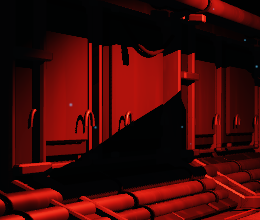
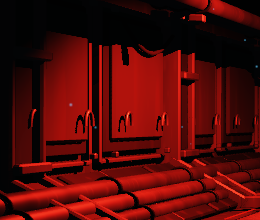
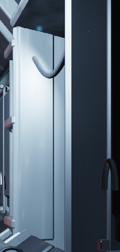
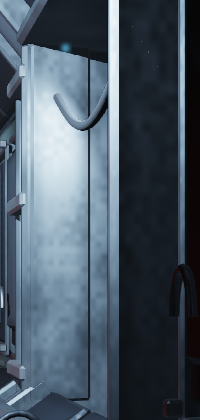
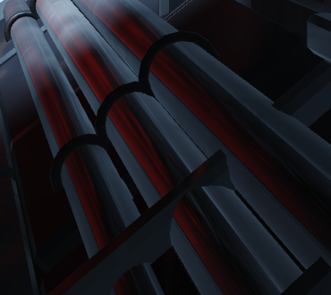
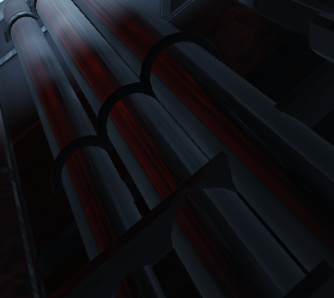
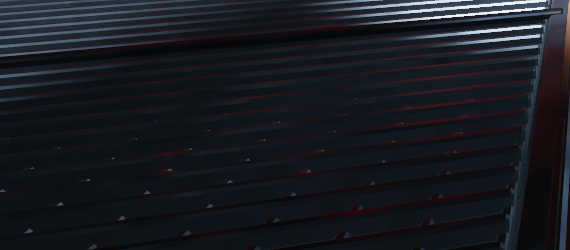
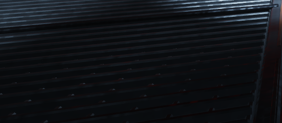
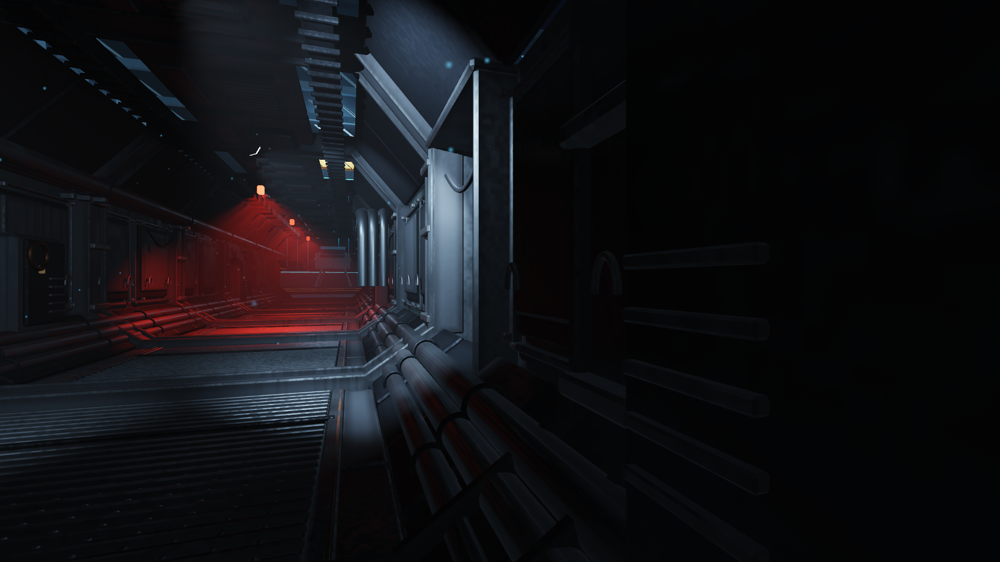
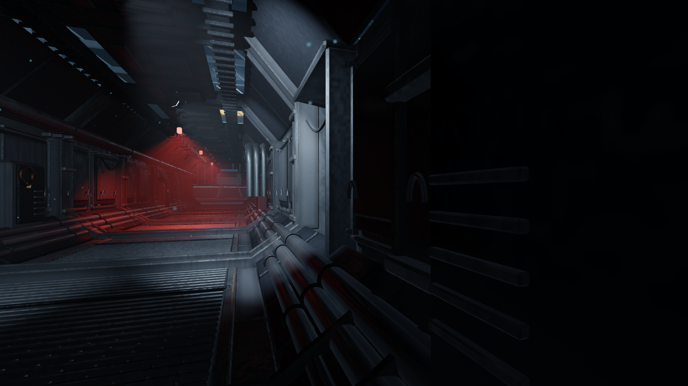

ECHO-9 — Iteracja 3: kontrolowane porównania
P0 — ciągłość czerwonego światła
Identyczny wycinek [160,420,420,640], bez skalowania i korekcji. Ten sam izolowany czerwony emiter, atmosfera wyłączona, cienie włączone. Zmieniono wyłącznie mocowanie oprawy.
Przed korektą
Po korekcie P0
Materiały — kontrola przy identycznym świetle
Etap P0 → etap materiałów. Moduły świateł, postprocessingu i ekspozycji są identyczne. Surowe piksele, bez skalowania. To etap konstrukcyjny, nie końcowy render.
Ściana — P0
Ściana — materiały
Rury — P0
Rury — materiały
Krata — P0
Krata — materiały
Końcowy kandydat — test krzywej wyświetlania
Te same bufory sceny, oświetlenie, kamera, czas i ekspozycja. Zmieniono wyłącznie końcową krzywą. Układ pomniejsza obrazy; oryginały mają 1920×1080.
Dotychczasowa krzywa
AgX — końcowy kandydat
Końcowy kandydat — filtrowanie detali
Wyłączone / włączone filtrowanie proceduralne i poszerzanie GGX. Ten sam zapisany probe AA-on w obu obrazach: izolacja powierzchni widocznych bezpośrednio. Statyczny test nie potwierdza stabilności w ruchu.
Detail AA OFF
Detail AA ON — końcowy kandydat